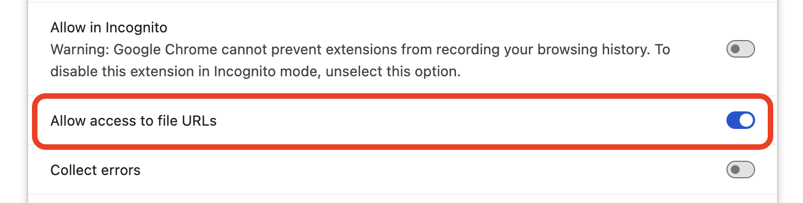

Local file access not enabled
This bookmark points to a local file, but the extension is not allowed to open local files.
To fix this, follow these steps:
- Open the extension details.
-
Enable Allow access to file URLs for the extension, as shown in the
screenshot:

- After setting the flag, click the button below: